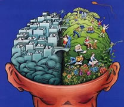
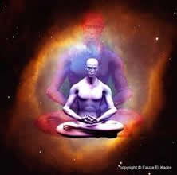
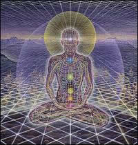

MENTE E MEDITAÇÃO
Controle sua mente e viva melhor!
Primeiramente saiba um pouco mais sobre seu cérebro.
O nosso cérebro é composto por dois hemisférios, o direito e o esquerdo, o hemisfério direito comanda o lado esquerdo do corpo e o hemisfério esquerdo comanda o lado direito do corpo.Ou seja, o hemisfério direito está ligado com a mão esquerda e o hemisfério esquerdo está ligado com a mão direita.
Cada um desses hemisférios tem características diferentes. O lado esquerdo trabalha a linguagem, fala, lógica, números, matemática, seqüência e palavras e o lado direito trabalha a rima, ritmo, música, pintura, imaginação, imagens, modelos e harmonias. O lado esquerdo é “racional”, e o lado direito é “intuitivo” e está ligado ao sexto sentido.
Exemplo: Em uma partida de futebol, ao calcular a trajetória da bola baseado em velocidade, direção do vento e a força necessária para chutar, um jogador está fazendo o cálculo com o lado direito do cérebro.
Enquanto que um aluno em uma prova de matemática está se utilizando do lado esquerdo do cérebro para fazer os cálculos.
O que acontece com a maioria das pessoas é que um hemisfério é mais predominante sobre o outro (a maioria das pessoas é destra). O ideal é encontrar o equilíbrio, aprendendo a utilizar os dois hemisférios do cérebro e, assim, alcançar os benefícios da conciliação entre suas competências.
Existem vários exercícios para alcançar a perfeita harmonia entre os hemisférios cerebrais. Um deles é passar a escrever com a outra mão, ou seja, se você é destro procure fazer a maior parte de seus afazeres com a mão esquerda, para assim ativar o lado direito do cérebro.
Exercício de meditação
Já tentou meditar? Através da meditação podemos alcançar o controle sobre nossa mente
Como meditar
O objetivo básico da meditação é o domínio da própria mente. Quanto mais freqüentemente você meditar a seu respeito e observar-se em ação, mais tranqüila e inteligentemente alerta sua mente se tornará.
A sua dedicação precisa ser integral. De inicio 10 a 15 minutos por dia.
Relaxe os músculos, deixe seu corpo mole.
O inimigo da meditação será sua própria mente.
LIÇÃO 1 – Postura, respiração e mente tranqüila
Feche os olhos e respire devagar e profundamente três ou quatro vezes
Se algum pensamento vier: Observe-se e expire.
LIÇÃO 2 – Meditando sobre o corpo
Olhe para aquilo que seu corpo está sentindo. Em primeiro lugar, direcione a atenção para a ponta do nariz. Espere e veja o que sente. Sente formigamento ou outra coisa.
Depois passe a observar seu queixo, testa, pescoço e percorra o corpo todo.
Observe sua respiração. Observe seu corpo.
LIÇÃO 3 – Identificando o falso
Apenas observe o que está acontecendo. E tudo aquilo que conseguir observar em você – se for falso – irá desaparecer gradualmente.
Observe-se num espelho.
LIÇÃO 4 – O momento da quietude
O objetivo da meditação é encontrar a quietude interior. Neste momento sua mente quer resistir ao seu controle lhe fazendo pensar em qualquer outra coisa. Procure manter a atenção na quietude.
A quietude invade tudo que tem movimento.
LIÇÃO 5 – Auto-Separação
Você aprenderá a separar o observador – sua consciência interior – do que não é verdadeiro em você.
Enquanto isso, sua tarefa será lembrar-se de ficar consciente!
LIÇÃO 6 – Dominando a mente
Para observar a mente, é preciso antes de mais nada observar o corpo.
Respire profunda e vagarosamente. Relaxe. Pense no rosto de uma pessoa amada – retenha essa imagem na mente.
Finalmente, quando você conseguir reter uma imagem (ou nenhuma, se for o caso) pelo tempo que desejar, sua mente desistirá.
Surpreenda-se pensando.
Os pensamentos são imagens em movimento. Diminua o movimento. Escolha uma das imagens. Congele-a.
Agora, rastreie a linha de pensamento imagem por imagem, até o pensamento inicial.
LIÇÃO 7 – Como lidar com a preocupação
O segredo é lembrar da separação. Lembre-se: existe a preocupação, que são os pensamentos, e existe você, o observador.
Os dois não são a mesma coisa.
Aumente o tempo de meditação a cada dia.
LIÇÃO 8 – A meditação no trabalho
Observar sua mente e suas ações enquanto está trabalhando ou envolvido em alguma coisa.
LIÇÃO 9 – indícios de aprofundamento da atenção.
Sua própria consciência interior começa a lhe falar.
‘Leia’ as sensações de seu corpo, leia o que estiver sentindo.
Não desanime, seja perseverante.
(Estes exercícios foram consultados do livro: Meditação, autor: Barry Long)
|  |
Benefícios:
Quando nos concentramos na respiração e o incessante fluxo de pensamentos distrativos é abrandado, nossa mente torna-se muito lúcida e clara.
Quando a turbulência dos pensamentos distrativos baixa e a mente fica parada, uma profunda felicidade e contentamento brotam naturalmente em nós. Essa sensação de contentamento e bem-estar ajuda-nos a lidar com as tarefas e dificuldades da vida diária.
Grande parte de nosso estresse e tensão provém de nossa própria mente e muitos dos problemas que enfrentamos inclusive os de saúde, são causados ou agravados por estresse. Uma simples meditação respiratória, feita todos os dias, durante dez ou quinze minutos, poderá reduzi-lo.
Vamos experimentar uma mente calma e espaçosa e muitos de nossos problemas corriqueiros vão desaparecer. Conseguiremos lidar melhor com situações difíceis e, naturalmente, sentir-nos-emos mais calorosos e positivos com as outras pessoas, melhorando assim nossas relações.
Dicas para alcançar novos estados da mente.
1 - Deixe de assistir televisão por pelo menos uma semana. Depois volte a assistir e perceba se o movimento da tela corresponde aos sons.
2 - Foque sua visão em um objeto qualquer, e somente nele. Depois passe a observar outro objeto próximo sem tirar a atenção do primeiro, e assim vá aumentando aos poucos o número de objetos focalizados. Isso aumentará seu poder de percepção a tudo o que está a sua volta.
3 - Faça (aprenda) algo novo que você nunca fez como, por exemplo, montar uma escultura com as próprias mãos.
4 - Passe um dia com uma criança bem nova e observe sua pureza, a curiosidade sobre coisas novas, e a capacidade de se divertir/brincar com qualquer coisa, tente ver o mundo como ela vê, simples e sem tanta preocupação.
Utilização de 100% do cérebro
A ciência diz que não utilizamos toda a capacidade do nosso cérebro. O que aconteceria se passásemos a acessar 100% da nossa capacidade cerebral? Abaixo, dicas de alguns dos filmes que tentam demonstrar o que aconteceria caso isso fosse possível.